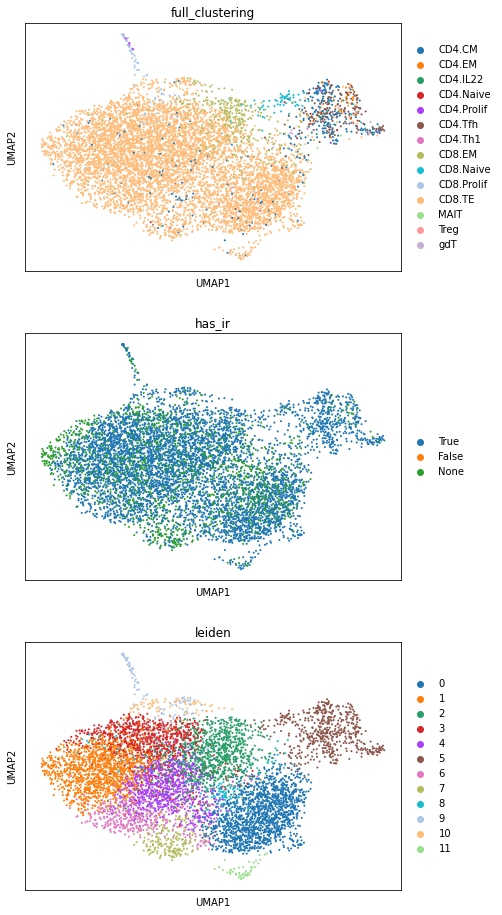
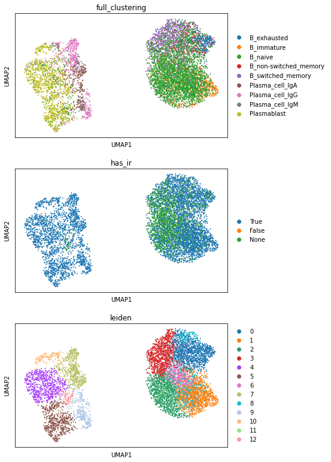
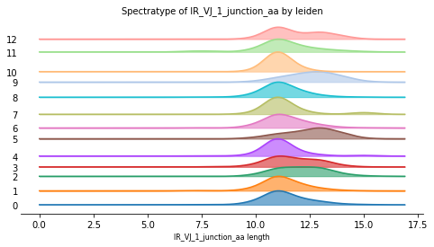
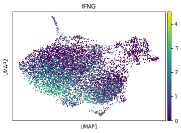
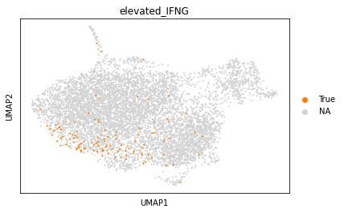
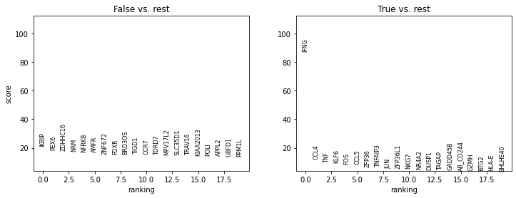
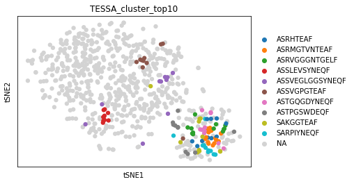
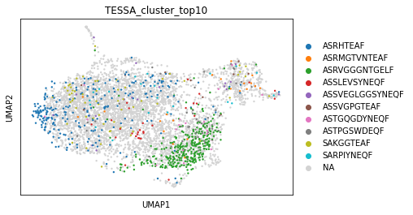
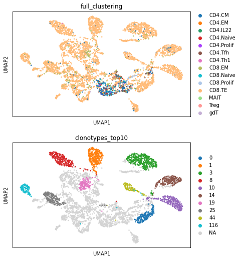
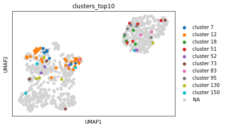

43. 整合 AIR 与转录组学#
关键要点
对于 AIR 与 GEX 的多模态数据集，通常用一种模态对细胞进行分组，再对另一种模态做标准的单模态分析（例如对 Leiden 聚类做序列分析）。
细胞功能（由 AIR 决定）与细胞状态（通过 GEX 观测）是相互关联的。已有研究表明，AIR 序列相似的细胞可以共享相似的表型。
由于计数矩阵（GEX）与氨基酸序列（IR）之间存在固有的结构差异，很难直接融合这两种模态。因此，最近开发了几种方法，利用配对的 GEX-AIR 数据来得到聚类或嵌入。不过，这些方法仍然较新，还不是标准分析流程的一部分。
环境设置
安装 conda:
在创建环境之前，请确保 conda 已安装在您的系统中。
保存 yml 内容:
将 yml 选项卡中的内容复制到名为
environment.yml的文件中。
创建环境:
打开终端或命令提示符。
运行以下命令：
conda env create -f environment.yml
激活环境:
创建好环境后，使用以下命令激活它：
conda activate <environment_name>
替换
<environment_name>，名称就是在environment.yml文件中指定的那个。在 yml 文件里，它看起来像这样：name: <environment_name>
验证安装:
通过运行以下命令，检查环境是否创建成功：
conda env list
43.1. 动机#
随着新型单细胞技术的发展，AIRR 测序常常与转录组学等其他组学层结合。对于 B 细胞和 T 细胞，这使得我们能够在单细胞层面分析多种特征：转录组提供了细胞当前状态的信息，而 AIR 则提示细胞的特异性，从而解释细胞在感染或接种疫苗后的命运。
43.2. 数据准备#
首先，我们把 GEX 与 AIR 数据合并。注意，这一步也可以在单细胞分析的更早阶段进行：例如，可以在预处理之前就融合两种模态，以过滤 GEX 双细胞。在融合 GEX 与 AIR 数据时，通常执行左连接（left join），即只保留带有 GEX 的细胞用于分析。因此，融合与过滤的先后顺序并不太重要。不过，在早期阶段把 AIR 信息可视化到 GEX 的 UMAP 中会很方便。例如，聚类中缺失 AIR 信息可以在细胞类型指派时提供帮助。
警告
Scirpy 更改了格式 其数据结构 （在 v0.13 中）。虽然整体分析流程没有改变，但本章中展示的一些输出可能不再准确。
See scirpy 发布说明 关于这个变化的更多细节。在更新本章之前，请参考 scirpy 官方文档.
import warnings
warnings.filterwarnings(
"ignore",
".*IProgress not found*",
)
warnings.simplefilter(action="ignore", category=FutureWarning)
warnings.simplefilter(action="ignore", category=UserWarning)
import numpy as np
import pandas as pd
import scanpy as sc
import scirpy as ir
warnings.simplefilter(action="ignore", category=pd.errors.DtypeWarning)
path_data = "./data"
path_gex_tcr = f"{path_data}/TCR_00_GEX.h5ad"
path_gex_bcr = f"{path_data}/BCR_00_GEX.h5ad"
path_tcr = f"{path_data}/TCR_01_preprocessed.h5ad"
path_bcr = f"{path_data}/BCR_01_preprocessed.h5ad"
path_tmp = f"{path_data}/tmp"
path_res = f"{path_data}/res"
首先，我们加载由作者处理过的基因表达数据。你可以从以下位置下载完整数据集： https://www.ebi.ac.uk/arrayexpress/files/E-MTAB-10026/E-MTAB-10026.processed.4.zip。由于我们只使用选定供体的 B 细胞和 T 细胞，我们为你提供了一个下采样的数据集：
! wget -O $path_bcr_input -nc https://figshare.com/ndownloader/files/35574338
! wget -O $path_bcr_input -nc https://figshare.com/ndownloader/files/35574338
下面我们加载 GEX 和此前已注释的 TCR 数据。这两个 AnnData 对象随后可以通过 Scirpy 轻松合并为一个共享的 AnnData 对象，它会把 AIR 信息存储在 adata.obs 和 GEX 在 adata.X。这里执行的是左连接：只有来自带 scRNA 数据细胞的 AIR 才会被添加到 AnnData 对象中。带 scRNA 但没有 AIR 的细胞在分析中通常会保留，因为其中可能包含 B 细胞和 T 细胞以外的细胞。然而，带 AIR 但没有 scRNA 的细胞显然缺少测量数据；由于大多数下游分析是在转录组层面进行的，这些细胞会被排除。
adata_tc = sc.read(path_gex_tcr)
adata_tcr = sc.read(path_tcr)
ir.pp.merge_with_ir(adata_tc, adata_tcr)
下面我们在 T 细胞转录组上计算 Leiden 聚类。
sc.pp.neighbors(adata_tc)
sc.tl.leiden(adata_tc)
为了获得总体概览，我们将把带有聚类分配的数据绘制成 UMAP 可视化。
sc.tl.umap(adata_tc)
sc.pl.umap(adata_tc, color=["full_clustering", "has_ir", "leiden"], ncols=1)

可以看到，大多数细胞属于 CD8+ 效应 T 细胞，并且大多数细胞都表达一个 TCR。AIR 的存在可以指导细胞类型注释，把其他免疫细胞的聚类与 T 细胞、B 细胞区分开来。此外，AIR 的缺失也可用于质量控制：例如，如果数据是按 T 细胞分选的，但某些大聚类却缺少 TCR，就应当从转录组层面进一步调查，看这些细胞是否被错误分选了。
类似地，我们针对 B 细胞合并 BCR 和 GEX 数据。
adata_bc = sc.read(path_gex_bcr)
adata_bcr = sc.read(path_bcr)
ir.pp.merge_with_ir(adata_bc, adata_bcr)
sc.pp.neighbors(adata_bc)
sc.tl.leiden(adata_bc)
sc.tl.umap(adata_bc)
sc.pl.umap(adata_bc, color=["full_clustering", "has_ir", "leiden"], ncols=1)

在这个可视化中，我们可以看到浆母细胞（Plasmablast）与 B 细胞之间有清晰的分离。
43.3. 多模态条件下的单模态分析#
虽然研究常常为两种模态提供配对测量，但它们往往被单独分析，只利用了有限的共享信息。通常用一种模态（AIRR 或转录组）来提供分组条件，再据此分析另一种模态。例如，我们可以通过在不同时间点对同一克隆谱系的细胞做差异表达（DEG）分析，观察它们如何适应扰动。
此前，我们在本书的其他章节中介绍过这些单模态分析。这里，我们将聚焦于如何把这些技术跨 AIRR 与其他模态来应用，而不再解释其底层方法。如需更详细的说明，请参阅相应章节。
43.3.1. 对 RNA 聚类的 AIR 分析#
我们已经在以下章节中展示过对 AIR 的序列分析与多样性分析： 克隆型分析。当有配对的 AIRR 数据和转录组数据时，我们可以对在 scRNA 空间中定义的细胞聚类做类似的分析。这些 scRNA 聚类如何定义，取决于研究设计。为 AIR 分析定义 scRNA 聚类的几种常用方式包括：
Leiden 聚类：可以说，在计数数据中定义细胞子集最简单的方法就是使用聚类算法。通常先做 Leiden 聚类，再用各聚类中的高表达基因来确定细胞状态。随后，我们就可以对感兴趣的聚类（例如一个很可能与疾病相关的激活聚类）进行 AIRR 分析。
标记基因：我们可以根据特定的标记基因来挑选细胞，这些基因可提示特定的细胞状态。你应当根据自己的研究问题相应地选择标记基因（例如增殖、激活、抑制等的标记）。当然，这也可以推广到基于一组标记基因所定义的评分。
细胞类型：B 细胞和 T 细胞存在多个不同层级的亚细胞类型。在通过转录组或其他模态注释出这些细胞类型之后，我们可以考察免疫库（repertoire）的组成在不同标签之间有何差异。这种分析既可以在样本内进行（不同细胞类型之间免疫库有何差异），也可以针对某一细胞类型跨样本进行（例如 CD8+ 效应 T 细胞的免疫库在患病者与健康者之间如何变化）。
Leiden 聚类：上面我们用 Leiden 算法对基因表达数据做了聚类。现在，我们可以用得到的分组来进行任意一种序列分析，例如谱型分析（spectratyping）。为此，我们只需用 Leiden 聚类的列名（“leiden”）来定义分组参数（这里是 color）。
ir.pl.spectratype(
adata_bc,
color="leiden",
viztype="curve",
curve_layout="shifted",
fig_kws={"figsize": [8, 4]},
kde_kws={"kde_norm": False},
)
<AxesSubplot:title={'center':'Spectratype of IR_VJ_1_junction_aa by leiden'}, xlabel='IR_VJ_1_junction_aa length'>

大多数 Leiden 聚类的 BCR 长度服从相似的分布。不过，可以清楚地看到，第 5 类和第 9 类主要包含序列长度较长的 BCR。这些细胞来自浆母细胞（Plasmablast）和浆细胞（Plasma cell）的一个亚聚类。长度分布出现分化可能由免疫反应引起，因此进一步考察这些聚类可能会有帮助。
标记基因：接下来，我们可以基于单个基因来定义分组。例如，这里我们选用干扰素 γ（Interferon Gamma）作为促炎免疫反应的标记。这样我们就能挑出一批当前正在启动免疫反应的细胞。
sc.pl.umap(adata_tc, color="IFNG")

将其可视化时，我们观察到它存在于 CD8 效应 T 细胞的一个子集中。接下来，我们选出 IFNG 高表达（任意阈值：2.5）的细胞，并在 AnnData 对象中标注这一选择。为了把它用作分类变量，我们将其存储为字符串。我们可以在 UMAP 中可视化所选的细胞。
adata_tc.obs["elevated_IFNG"] = adata_tc[:, "IFNG"].X.todense() > 3
adata_tc.obs["elevated_IFNG"] = adata_tc.obs["elevated_IFNG"].astype(str)
sc.pl.umap(adata_tc, color="elevated_IFNG", groups="True")
... storing 'elevated_IFNG' as categorical

接下来，我们生成频率图，看看 IFNg 表达升高的细胞的 TCR 是否相较于其余细胞表现出特定的序列模式。首先，我们选出所有带注释 CDR3β 的细胞，然后分成背景细胞和 IFNG 升高的细胞。最后，我们构建基序（motif）并把它们绘制出来。
from IPython.display import SVG
from palmotif import compute_pal_motif, svg_logo
df_sequences = adata_tc[~adata_tc.obs["IR_VDJ_1_junction_aa"].isna()].obs[
["IR_VDJ_1_junction_aa", "elevated_IFNG"]
]
seqs_elevated = df_sequences[df_sequences["elevated_IFNG"] == "True"][
"IR_VDJ_1_junction_aa"
]
seqs_background = df_sequences[df_sequences["elevated_IFNG"] == "False"][
"IR_VDJ_1_junction_aa"
]
centroid = df_sequences["IR_VDJ_1_junction_aa"].value_counts().index[0]
motif_ifng, _ = compute_pal_motif(
seqs=seqs_elevated,
centroid=centroid,
)
motif_back, _ = compute_pal_motif(
seqs=seqs_background,
centroid=centroid,
)
svg_logo(motif_ifng, "tmp/motif_ifng.svg")
svg_logo(motif_back, "tmp/motif_back.svg")
display(SVG("tmp/motif_ifng.svg"))
display(SVG("tmp/motif_back.svg"))
尽管特定位置上氨基酸的频率略有变化，但在两组细胞之间看不到明显不同的大基序。因此，没有任何证据表明，所选的这部分 T 细胞对同一目标表位具有共同的特异性。
细胞类型：在这里，我们针对在转录组层面注释的不同细胞类型（存储在 “full_clustering” 中）计算其多样性。可以看到，增殖型和效应型 CD8+ T 细胞的多样性最低。由于这些细胞类型包含较大的克隆，这在意料之中。这样的分析可以用作细胞类型指派的合理性检查，或用来比较不同研究之间各细胞类型的多样性。
# TODO: remove clonotype definition once this is handled by clonotype chapter
# ir.pl.alpha_diversity(adata_tc, groupby="full_clustering", target_col="clone_id", figsize=[8, 4])
43.3.2. 对 AIR 聚类的 GEX 分析#
类似地，我们也可以对转录组进行标准分析 差异基因表达分析，但针对在 AIR 空间中得到的分组。例如：
Clonotype：如果存在足够的克隆扩增，AIR 克隆型可以用作聚类。这一点尤其有意思，因为克隆型可作为细胞特异性的替代指标。因此，识别同一抗原的细胞可以在时间、治疗或刺激等不同条件下被追踪，以观察其变化。
克隆型网络：为了增加可追踪的细胞数量，我们可以用 AIR 序列相似的克隆型所构成的网络来代替单个克隆型。虽然这些细胞在谱系上并无亲缘关系，但它们很可能具有相同的特异性。
疾病特异性：我们此前查询过数据库，以检测表位特异性的 AIR。现在，我们可以利用这一注释来考察：对选定疾病有反应的 B 细胞或 T 细胞与其他细胞有何不同。这里必须谨慎，因为数据库查询只提供阳性注释：通过相同或相似的 AIR，我们识别出对某一表位特异的细胞；但数据库中缺少某一对 AIR 与表位，并不意味着这种结合不可能发生。
与上一小节一样，所选的条件和分析在很大程度上取决于你的研究问题。在之前的笔记本中，我们已经把这些条件注释在 adata.obs。由于它们因此可以同样的方式应用于 DEG 分析，这里我们仅通过 #todo 展示 DEG，待其余部分统一后再补充。
# todo change once load clonotype annotated data
sc.tl.rank_genes_groups(adata_tc, groupby="elevated_IFNG")
sc.pl.rank_genes_groups(adata_tc, groupby="elevated_IFNG")
WARNING: Default of the method has been changed to 't-test' from 't-test_overestim_var'

# TODO adapt to disease specific cells => Covid B cells against rest
43.4. 多模态整合#
在上一节中，我们展示了如何在由其他模态得到的聚类上进行特定模态的分析。然而，这并未充分利用配对数据所提供的额外信息，因为 AIR 与基因表达是相互关联的：识别相同表位的适应性免疫细胞，在激活后会经历相似的发育。与其他组学组合一样，近来人们对整合 AIR 与 GEX 以得到聚类或共享表示也产生了兴趣。
这些模型仍然较新，还不是标准“最佳实践”分析流程的一部分。我们认为这些方法或类似方法今后会被越来越多地使用，因此想把这些整合模型作为一种展望来介绍。不过，在应用这些模型时应当谨慎，因为它们仍处于实验阶段，其优缺点尚未经过独立评估。
43.4.1. 整合 TCR 与 GEX#
直到最近，才开发出三种联合利用 TCR 序列和转录组的方法，它们各自针对分析的不同方面：
TESSA：在 TCR 和 GEX 嵌入上应用贝叶斯模型，对转录组和序列相似的 T 细胞进行聚类。
Conga：通过图论方法，依据 GEX 和 TCR 的距离对 T 细胞克隆进行聚类
mvTCR：使用深度变分自编码器（Deep Variational Autoencoder）来得到 GEX 与 TCR 的共享嵌入。
所有多模态方法都需要配对的 GEX 和 AIR 数据。因此，我们先过滤掉所有没有 CDR3β 的细胞。
adata_tc = adata_tc[~adata_tc.obs["IR_VDJ_1_junction_aa"].isna()].copy()
43.4.1.1. TESSA#
Zhang 等人开发了 TESSA（TCR functional landscape estimation supervised with scRNA-seq analysis，即在 scRNA-seq 分析监督下的 TCR 功能景观估计） [Zhang et al., 2021]，它旨在通过贝叶斯建模，根据 T 细胞克隆的 TCR 序列和转录组对其进行嵌入和聚类。首先用一个预训练的自编码器把 CDR3β 序列压缩为 30 维的数值表示。随后，对各维度进行加权提升，使 TCR 表示与相似 TCR 组的基因表达相关联，从而为各 TCR 位置赋予“解释细胞基因表达”的重要性。在一个迭代过程中，不断更新权重和分组，直到收敛，以在两种模态之间达到最大程度的一致。
在嵌入具有已知表位特异性的 T 细胞时，TESSA 产生了高纯度的聚类，数据来自 [10x Genomics, 2019]，超越了单模态模型 GLIPH [Glanville et al., 2017]，后者常用于聚类 TCR 序列。此外，聚类中心性可提示亲合力更高的克隆——表现为克隆扩增和较高的 ADT 计数。把 TESSA 用于来自 [Yost et al., 2019]的数据时，作者在接受 PD-1 阻断治疗的患者中检测到新的应答 T 细胞聚类。
安装所需代码和说明见 TESSA 仓库。
43.4.1.1.1. 数据预处理#
TESSA 需要若干特定格式的 TCR 和 GEX 文件。
首先，我们保存一个包含以下各列的 .csv 文件：
contig_id：以细胞条形码作为索引列
cdr3：去掉起始 C 和结尾 F 之后的 CDR3β 氨基酸序列
df_tcr = adata_tc.obs
df_tcr.index.name = "contig_id"
# trimm cdr3 sequence
df_tcr["cdr3"] = [seq[1:-1] for seq in df_tcr["IR_VDJ_1_junction_aa"]]
# select only columns needed
df_tcr = df_tcr[["cdr3"]]
df_tcr.to_csv(f"{path_tmp}/TESSA_tcrs.csv")
df_tcr.head(5)
| cdr3 | |
|---|---|
| contig_id | |
| S11_AAACCTGAGATTACCC-1 | ASSLDARDRGRVTEAF |
| S11_AAACCTGGTAATTGGA-1 | ASSPGTGTYGYT |
| S11_AAACCTGGTAGCACGA-1 | ASSIPGAVHEQY |
| S11_AAACCTGGTCTCAACA-1 | ASSLDARDRGRVTEAF |
| S11_AAACCTGTCGCCGTGA-1 | ASSPQTGVARYGYT |
我们将像 TESSA 论文中那样，筛选变异程度最高的 10% 的基因。
n_genes = adata_tc.shape[1] // 10
sc.pp.highly_variable_genes(adata_tc, n_top_genes=n_genes)
adata_tessa = adata_tc[:, adata_tc.var["highly_variable"]].copy()
现在我们把 GEX 矩阵存储为一个 “.csv” 文件。TESSA 需要 adata 对象的转置矩阵，即行代表不同的基因、列代表特定的细胞。为此，我们先把计数数据存储到一个带有正确索引和列名的 DataFrame 中，然后对该 DataFrame 进行转置。
count_mat = adata_tessa.X.A
df_counts = pd.DataFrame(count_mat)
df_counts.index = adata_tessa.obs.index
df_counts.index.name = ""
df_counts.columns = adata_tessa.var.index
df_counts = df_counts.transpose()
df_counts.to_csv(f"{path_tmp}/TESSA_gex.csv")
df_counts.head()
| S11_AAACCTGAGATTACCC-1 | S11_AAACCTGGTAATTGGA-1 | S11_AAACCTGGTAGCACGA-1 | S11_AAACCTGGTCTCAACA-1 | S11_AAACCTGTCGCCGTGA-1 | S11_AAACCTGTCTTATCTG-1 | S11_AAACGGGCAAGAAAGG-1 | S11_AAACGGGGTAGCGATG-1 | S11_AAACGGGGTCGGCACT-1 | S11_AAACGGGGTTACGGAG-1 | ... | S12_TTTGGTTGTCAGAGGT-1 | S12_TTTGGTTTCAAGAAGT-1 | S12_TTTGGTTTCTACTATC-1 | S12_TTTGGTTTCTCGCTTG-1 | S12_TTTGTCACACGGTAGA-1 | S12_TTTGTCAGTAGAAAGG-1 | S12_TTTGTCAGTCCAACTA-1 | S12_TTTGTCAGTGAGTGAC-1 | S12_TTTGTCATCCACTCCA-1 | S12_TTTGTCATCGCATGAT-1 | |
|---|---|---|---|---|---|---|---|---|---|---|---|---|---|---|---|---|---|---|---|---|---|
| KLHL17 | 0.000000 | 0.0 | 0.00000 | 0.000000 | 0.000000 | 0.0000 | 0.0 | 0.0 | 0.00000 | 0.000000 | ... | 0.000000 | 0.0 | 0.000000 | 0.000000 | 1.662003 | 0.000000 | 0.0 | 0.000000 | 0.000000 | 0.0 |
| HES4 | 0.000000 | 0.0 | 0.00000 | 0.000000 | 0.000000 | 0.0000 | 0.0 | 0.0 | 0.00000 | 0.000000 | ... | 0.000000 | 0.0 | 0.000000 | 0.000000 | 0.000000 | 0.000000 | 0.0 | 0.000000 | 0.000000 | 0.0 |
| ISG15 | 1.845827 | 0.0 | 1.54457 | 2.441434 | 2.430966 | 0.9284 | 0.0 | 0.0 | 1.64661 | 1.565189 | ... | 1.210719 | 0.0 | 1.581859 | 1.511785 | 0.000000 | 2.015501 | 0.0 | 2.088418 | 1.611682 | 0.0 |
| AGRN | 0.000000 | 0.0 | 0.00000 | 0.000000 | 0.000000 | 0.0000 | 0.0 | 0.0 | 0.00000 | 0.000000 | ... | 0.000000 | 0.0 | 0.000000 | 0.000000 | 0.000000 | 0.000000 | 0.0 | 0.000000 | 0.000000 | 0.0 |
| TTLL10 | 0.000000 | 0.0 | 0.00000 | 0.000000 | 0.000000 | 0.0000 | 0.0 | 0.0 | 0.00000 | 0.000000 | ... | 0.000000 | 0.0 | 0.000000 | 0.000000 | 0.000000 | 0.000000 | 0.0 | 0.000000 | 0.000000 | 0.0 |
5 rows × 5281 columns
43.4.1.1.2. 运行模型#
我们需要提供不同的设置选项，其中大多数用于指定输入或输出目录。我们先将它们汇总到一个字典中。
settings_full = {
# Input files
"tcr": f"{path_tmp}/TESSA_tcrs.csv",
"exp": f"{path_tmp}/TESSA_gex.csv",
# TESSA models
"model": "TESSA/BriseisEncoder/TrainedEncoder.h5",
"embeding_vectors": "TESSA/BriseisEncoder/Atchley_factors.csv",
# Output files
"output_TCR": f"{path_res}/TESSA_tcr_embedding.csv",
"output_log": f"{path_res}/TESSA_log.log",
"output_tessa": f"{path_res}",
"within_sample_networks": "FALSE",
}
下一步，我们将通过指定环境并添加设置来创建运行 TESSA 的命令。
cmd_tessa = "source ~/.bashrc &&"
cmd_tessa += "conda activate TESSA && "
cmd_tessa += "python TESSA/Tessa_main.py"
for key, value in settings_full.items():
cmd_tessa += f" -{key} {value}"
cmd_tessa
'source ~/.bashrc &&conda activate TESSA && python TESSA/Tessa_main.py -tcr ./data/tmp/TESSA_tcrs.csv -exp ./data/tmp/TESSA_gex.csv -model TESSA/BriseisEncoder/TrainedEncoder.h5 -embeding_vectors TESSA/BriseisEncoder/Atchley_factors.csv -output_TCR ./data/res/TESSA_tcr_embedding.csv -output_log ./data/res/TESSA_log.log -output_tessa ./data/res -within_sample_networks FALSE'
最后，我们通过调用该命令在指定设置下运行模型。视计算资源而定，这可能需要几分钟。由于命令行输出非常冗长，我们将通过 capture 行魔法（line magic）将该单元格静默。调试时应删除第一行。
%%capture
!$cmd_tessa
43.4.1.1.3. 输出#
现在我们会得到三个输出文件，可进一步用于下游任务：
TESSA_tcr_embedding.csv：TCR 的嵌入表示（不含 GEX 信息）
result_meta.csv：逐细胞的聚类分配
tessa_final.RData：包含推断得到的模型参数（如加权向量 b）
这里，我们将前两个文件用作嵌入和聚类，并以 AnnData 格式存储以便处理。为避免聚类被高度扩增的克隆所主导，我们通过去除重复的 TCR，将细胞级数据降为克隆级。
tessa_embedding = pd.read_csv(f"{path_res}/TESSA_tcr_embedding.csv", index_col=0)
tessa_embedding = tessa_embedding.drop_duplicates()
tessa_obs = adata_tc[adata_tc.obs.index.isin(tessa_embedding.index)].obs
tessa_embedding = sc.AnnData(X=tessa_embedding.values, obs=tessa_obs)
接下来，我们将 TESSA 的聚类分配添加到 AnnData 对象中。由于 TESSA 在内部会略微改变条形码，我们需要对此进行调整。此外，我们会去除每个聚类内重复的 TCR。
clustering = pd.read_csv(f"{path_res}/result_meta.csv", index_col=0)
clustering.index = clustering.index.str.replace(".", "-")
clustering = clustering[clustering.index.isin(tessa_embedding.obs.index)]
tessa_embedding.obs["TESSA_cluster"] = clustering["cluster_number"].values
print(f"Unique clones: {tessa_embedding.obs['cdr3'].nunique()}")
print(f"Unique clusters: {tessa_embedding.obs['TESSA_cluster'].nunique()}")
Unique clones: 751
Unique clusters: 134
可以看到，751 个克隆被归入 144 个聚类，这些聚类具有相似的 TCR 序列，很可能在功能上相关。在 t-SNE 可视化中，我们将突出显示 TCR 嵌入空间中最大的十个聚类。
sc.pp.neighbors(tessa_embedding)
sc.tl.tsne(tessa_embedding)
top_10_clusters = tessa_embedding.obs["TESSA_cluster"].value_counts().head(10).index
tessa_embedding.obs["TESSA_cluster_top10"] = tessa_embedding.obs["TESSA_cluster"].apply(
lambda x: x if x in top_10_clusters else np.nan
)
sc.pl.tsne(tessa_embedding, color="TESSA_cluster_top10")
WARNING: Consider installing the package MulticoreTSNE (https://github.com/DmitryUlyanov/Multicore-TSNE). Even for n_jobs=1 this speeds up the computation considerably and might yield better converged results.
... storing 'TESSA_cluster' as categorical
... storing 'TESSA_cluster_top10' as categorical

为了在 GEX 空间中绘制聚类分配，我们将该分配添加到原始 adata 对象上。绘图后可以看到，TESSA 聚类在 GEX 层面也共享相似的表型。
mapping_dict = dict(
tessa_embedding.obs[["IR_VDJ_1_junction_aa", "TESSA_cluster_top10"]].values
)
adata_tc.obs["TESSA_cluster_top10"] = adata_tc.obs["IR_VDJ_1_junction_aa"].map(
mapping_dict
)
sc.pl.umap(adata_tc, color="TESSA_cluster_top10")
... storing 'cdr3' as categorical
... storing 'TESSA_cluster_top10' as categorical

在两种可视化中，我们都能看到聚类在 TCR 和 GEX 层面是相关的。然而，完整的聚类无法在单一模态中直接观察到。由于 TCR 与 GEX 图谱相似，这些细胞可能针对相同的表位。例如，我们可以将这一注释用于上文所述的细胞网络之间的 DEG 分析。
43.4.1.2. CoNGA#
克隆型邻接图分析（CoNGA） [Schattgen et al., 2022] 在克隆型层面利用 GEX 和 TCR 上的相似度图，其中使用了著名的距离度量 TCRDist [Dash et al., 2017]。根据图的邻域，由共享的 GEX 和 TCR 分配形成聚类。这些所谓的“CoNGA 聚类”因而具有相似的受体序列以及相似的基因表达。CoNGA 聚类中包含的克隆型，其 TCR 在长度和理化性质等方面高度相似，并被证明能够捕捉特异性。下面的说明将运行主要的 CoNGA 流程。由于流程的不同方面已在 Colab 教程 中解释，以下描述主要侧重于如何转换数据并运行分析流程。
43.4.1.2.1. 数据准备#
CoNGA 方便地支持多种基因表达矩阵输入类型，包括 h5ad 文件。对于克隆型信息，我们需要先在 Cell Ranger 输出上运行一个预处理脚本来创建 clone_file。
df_tcr = pd.read_csv(
f"{path_data}/TCR_00_read_aligned.csv",
# index_col='barcode',
)
df_tcr = df_tcr.drop("Unnamed: 0", axis=1)
df_tcr = df_tcr[df_tcr["barcode"].isin(adata_tc.obs.index)]
path_reduced_tcr = f"{path_tmp}/conga_tcrs.csv"
df_tcr.to_csv(path_reduced_tcr)
path_conga_clones = f"{path_tmp}/conga_clone_file.tsv"
cmd_conga_pp = (
"python conga/scripts/setup_10x_for_conga.py "
f"--filtered_contig_annotations_csvfile {path_reduced_tcr} "
f"--output_clones_file {path_conga_clones} "
"--organism human"
)
%%capture
!$cmd_conga_pp
CoNGA 流程需要未取对数的基因表达计数。由于我们的 SARS-CoV-2 数据集未提供该数据，我们将通过其逆运算撤销 log1p 变换，并将结果保存到单独的文件中。如果在自己的数据集上运行分析，可以直接链接到原始计数数据。
path_conga_gex = f"{path_tmp}/conga_gex.h5ad"
adata_conga = adata_tc.copy()
adata_conga.X = np.expm1(adata_tc.X)
sc.write(adata=adata_conga, filename=path_conga_gex)
43.4.1.2.2. 执行 CoNGA#
我们可以通过以下命令行调用来执行主要的 CoNGA 流程，该调用指定了输入和输出目录。
cmd_conga = f"cd {path_res} && "
cmd_conga += (
"python ../../conga/scripts/run_conga.py "
f"--graph_vs_graph --graph_vs_graph_stats --graph_vs_features --tcr_clumping --find_hotspot_features "
f"--gex_data ../../{path_conga_gex} --gex_data_type h5ad "
f"--clones_file ../../{path_conga_clones} "
f"--organism human --outfile_prefix conga"
)
%%capture
!$cmd_conga
43.4.1.2.3. 输出#
分析流程的结果储存在 ./data/res/conga_results_summary.html 并附有对每个结果的解释。其他注释和图表见 ./data/res_conga/。解释所有结果超出了本教程的范围。因此，我们建议参阅 web summary 和 colab notebook 中非常详细的解释。
43.4.1.3. mvTCR#
An 等人提出的 mvTCR 是一种多视图变分自编码器，可将 TCR 序列和基因表达压缩为低维表示 [An et al., 2021]。两种深度学习架构——Transformer 和多层感知机（MLP）——分别从 TCR 和 GEX 中提取信息，然后融合以得到联合空间。随后，训练好的模型可用于嵌入相似的数据。
作者表明，相比单模态嵌入，多模态模型能更好地捕捉抗原特异性，所用数据来自 [10x Genomics, 2019]，用于预测和聚类。此外，他们还表明，在来自以下来源的 SARS-CoV-2 数据集上，细胞类型和细胞功能在嵌入空间中得以保留： [Fischer et al., 2021]。代码和进一步说明见 mvTCR 仓库。
mvTCR 依赖 AnnData 格式，因此我们需要为训练准备 AnnData 对象。为此，提供了若干函数。
import sys
sys.path.append("mvTCR")
sys.path.append(".")
import tcr_embedding.utils_training as utils
from tcr_embedding.models.model_selection import run_model_selection
from tcr_embedding.utils_preprocessing import encode_tcr, group_shuffle_split
AnnData 对象需要克隆型分配（见 克隆型分析）。由于 mvTCR 使用主受体的两条链，我们也将利用这些信息来定义克隆型。# todo => 使用已提供的
adata_mvtcr = adata_tc[~adata_tc.obs["IR_VJ_1_junction_aa"].isna()].copy()
# todo delete once data is unified
ir.tl.define_clonotypes(
adata_mvtcr, key_added="clonotype", receptor_arms="all", dual_ir="primary_only"
)
100%|██████████████████████████████████████████████████████████████████████████████████████████████████████████████████████████████████████████████████████████████████████████| 728/728 [00:00<00:00, 795.39it/s]
该模型需要 CDR3α 和 CDR3β 链的数值编码。为此，我们需要提供包含氨基酸序列的列。此外，pad 属性表示序列的最大长度。如果之后不打算嵌入更多数据，可以将其设为最大序列长度。
pad = max(
adata_mvtcr.obs["IR_VJ_1_junction_aa"].str.len().max(),
adata_mvtcr.obs["IR_VDJ_1_junction_aa"].str.len().max(),
)
encode_tcr(
adata_mvtcr,
column_cdr3a="IR_VJ_1_junction_aa",
column_cdr3b="IR_VDJ_1_junction_aa",
pad=pad,
)
数据需要划分为训练集和验证集。具体做法是设置值 train 或 val ，用于 adata.obs['set']中的每个细胞。通过选择 clonotype 和 0.2，用于评估模型性能的数据集将包含约 20% 的、相对训练集而言独特的克隆型。此设置一般可用于数据分析。
train, val = group_shuffle_split(adata_mvtcr, group_col="clonotype", val_split=0.2)
adata_mvtcr.obs["set"] = "train"
adata_mvtcr.obs.loc[val.obs.index, "set"] = "val"
我们需要提供训练过程中使用的各种信息：
params_experiment = {
"study_name": "test_haniffa", # Name that identifies the study
"model_name": "moe", # Type of mixture model used during training, authors suggest using Mixture of Export (moe)
"balanced_sampling": "clonotype", # Column containing the id for clonotypes
"comet_workspace": None, # Can be used to log experiments via comet-ml
"save_path": path_res, # Output path, were the selected models are stored
}
mvTCR 会运行超参数优化来选择最佳模型架构。对于一般分析，优化模式 pseudo_metric 最为合适。此处，最佳模型由保留数据集多种特征的能力来决定。下面，我们选择相同的 TCR 序列（clonotype）与细胞类型（functional.cluster），两者权重相同（均为 1）。如果训练后潜空间被某一种模态主导，我们可以用不同的权重重新运行模型。
params_optimization = {
"name": "pseudo_metric",
"prediction_labels": {"clonotype": 1, "full_clustering": 1},
}
最后，我们可以运行模型选择。尤其对于较大的数据集，作者使用了广泛的模型搜索。作为示例，这里我们只训练一个模型。建议使用带 GPU 的计算机。即便如此，模型仍需训练数分钟。
n_runs = 1
run_model_selection(adata_mvtcr, params_experiment, params_optimization, n_runs)
[I 2022-11-17 13:46:07,144] A new study created in RDB with name: test_haniffa
100%|███████████████████████████████████████████████████████████████████████████████████████████████████████████████████████████████████████████████████████████████████████████| 200/200 [08:12<00:00, 2.46s/it]
[I 2022-11-17 13:54:41,499] Trial 0 finished with value: 1.681318287535559 and parameters: {'dropout': 0.1, 'activation': 'linear', 'rna_hidden': 1500, 'hdim': 200, 'shared_hidden': 100, 'rna_num_layers': 1, 'tfmr_encoding_layers': 4, 'loss_weights_kl': 4.0428727350273357e-07, 'loss_weights_tcr': 0.034702669886504146, 'lr': 1.0994335574766187e-05, 'zdim': 50, 'tfmr_embedding_size': 16, 'tfmr_num_heads': 8, 'tfmr_dropout': 0.15000000000000002}. Best is trial 0 with value: 1.681318287535559.
Study statistics:
Number of finished trials: 1
Number of pruned trials: 0
Number of complete trials: 1
Best trial:
trial_0
Value: 1.681318287535559
现在我们有了一个训练好的模型，可用它将数据嵌入到同时捕捉 TCR 和 GEX 的表示中。为此，我们将从 studies 文件夹中加载最佳模型。
best_trial = 0
path_model = f"../data/res/trial_{best_trial}/best_model_by_metric.pt"
model = utils.load_model(adata_mvtcr, path_model)
下一步，我们现在可以嵌入这些数据，并将注释分配给新的、已嵌入的 AnnData 对象。
mvtcr_embedding = model.get_latent(adata_mvtcr, metadata=[])
mvtcr_embedding.obs = adata_mvtcr.obs.copy()
现在，这一嵌入可用于可视化等数据分析。为此，我们将选取样本中丰度最高的前 10 个克隆型。
top_10_clones = mvtcr_embedding.obs["clonotype"].value_counts().head(10).index
mvtcr_embedding.obs["clonotypes_top10"] = mvtcr_embedding.obs["clonotype"].apply(
lambda x: x if x in top_10_clones else np.nan
)
现在，我们将使用 UMAP 来展示细胞类型分配和前 10 个克隆型。
sc.pp.neighbors(mvtcr_embedding)
sc.tl.umap(mvtcr_embedding)
sc.pl.umap(mvtcr_embedding, color=["full_clustering", "clonotypes_top10"], ncols=1)
... storing 'clonotype' as categorical
... storing 'set' as categorical
... storing 'clonotypes_top10' as categorical

这里我们对 TCR-GEX 嵌入进行可视化。可以清楚地看到，数据按克隆型分离。不过，数据在克隆内部还形成了额外的亚聚类和结构，这受到 GEX 的影响。根据具体分析，你可能需要调整 GEX 与 TCR 之间的权重并运行更长时间的参数搜索。此外，现在也可以使用 Scanpy 函数在该嵌入上执行聚类等不同的下游任务。
43.4.2. 整合 BCR 与 GEX#
上述三种模型都是针对 TCR 开发的。不过，由于 TCR 与 BCR 结构相似，CoNGA 和 mvTCR 或许也适用于 B 细胞。但这两个模型在其论文中均未针对 B 细胞进行评估。TESSA 依赖于预训练的 TCR 自编码器，因此不应用于 BCR-GEX 整合。作者最近发表了 Benisse，它与 TESSA 类似，但应用于 B 细胞 [Zhang et al., 2022].
与 TCR 类似，多模态 BCR 整合工具仍较为新颖，尚未用于标准分析流程。因此，应用这些模型时我们建议保持谨慎。
43.4.2.1. Benisse#
Benisse 使用预训练模型将 BCR 的重链嵌入为数值表示。该模型在克隆型层面工作：即将具有相同 BCR 的细胞的 GEX 取平均，形成每个克隆的代表性表示。随后，Benisse 通过构建稀疏图结构，检测在 BCR 和 GEX 层面相似的克隆。
由于该模型的设置与 TESSA 相似，我们将遵循相同的处理步骤，仅在细节与上文不同处加以说明。
由于运行时间较长，我们首先将 B 细胞数据集下采样为某一供体的 1000 个细胞。
adata_benisse = adata_bc[~adata_bc.obs["IR_VDJ_1_junction_aa"].isna()]
adata_benisse = adata_benisse[adata_benisse.obs["sample_id"] == "MH9143275"]
sc.pp.subsample(adata_benisse, n_obs=1000, random_state=0)
print(f"Amount of cells: {len(adata_benisse)}")
Amount of cells: 1000
df_bcr = adata_benisse.obs
df_bcr.index.name = "contigs"
df_bcr = df_bcr.rename(columns={"IR_VDJ_1_junction_aa": "cdr3"})
df_bcr = df_bcr[["cdr3"]]
df_bcr.to_csv(f"{path_tmp}/BENISSE_bcrs.csv")
df_bcr.head(5)
| cdr3 | |
|---|---|
| contigs | |
| TTCTCAAAGAATTCCC-MH9143275 | CAGGSQWEVKLDYW |
| TATCAGGAGTGAACAT-MH9143275 | CARPRSLIAAAGAFDIW |
| CATCCACCAACGCACC-MH9143275 | CASEEVTMVRGVMFPYGMDVW |
| GTCGTAATCACCGTAA-MH9143275 | CAREGMVYVDYW |
| AACTCTTAGCACCGCT-MH9143275 | CATQNPGYSSSWDDRGAFDIW |
我们将筛选 1000 个高变基因（如 GitHub 仓库的样本数据文件中所提供）。
sc.pp.highly_variable_genes(adata_benisse, n_top_genes=1000)
adata_benisse = adata_benisse[:, adata_benisse.var["highly_variable"]].copy()
count_mat = adata_benisse.X.A
df_counts = pd.DataFrame(count_mat)
df_counts.index = adata_benisse.obs.index
df_counts.index.name = ""
df_counts.columns = adata_benisse.var.index
df_counts = df_counts.transpose()
df_counts.to_csv(f"{path_tmp}/BENISSE_gex.csv")
df_counts.head()
| TTCTCAAAGAATTCCC-MH9143275 | TATCAGGAGTGAACAT-MH9143275 | CATCCACCAACGCACC-MH9143275 | GTCGTAATCACCGTAA-MH9143275 | AACTCTTAGCACCGCT-MH9143275 | ACTATCTCACAGGAGT-MH9143275 | CAGTAACCAGGAATCG-MH9143275 | ACTGTCCTCTCGGACG-MH9143275 | TCGGGACCAGCATGAG-MH9143275 | ATTGGACAGCCATCGC-MH9143275 | ... | CACAGTAAGTGTCCAT-MH9143275 | GTCAAGTCAAGGACTG-MH9143275 | TAGTGGTAGCGATTCT-MH9143275 | GTGCAGCGTCTCCCTA-MH9143275 | CTGGTCTCATCCTTGC-MH9143275 | CTTTGCGAGCTGCCCA-MH9143275 | TACACGATCGGGAGTA-MH9143275 | GGGCACTAGGATGTAT-MH9143275 | TCACAAGGTGGTGTAG-MH9143275 | TGCGCAGTCTCAAGTG-MH9143275 | |
|---|---|---|---|---|---|---|---|---|---|---|---|---|---|---|---|---|---|---|---|---|---|
| HES4 | 0.000000 | 0.0 | 0.0 | 0.000000 | 0.0 | 0.00000 | 0.000000 | 0.0 | 0.0 | 0.00000 | ... | 0.0 | 0.0 | 0.0 | 0.0 | 0.0 | 0.0 | 0.000000 | 0.0 | 0.0 | 0.000000 |
| CPTP | 0.334078 | 0.0 | 0.0 | 0.000000 | 0.0 | 0.00000 | 0.000000 | 0.0 | 0.0 | 0.44491 | ... | 0.0 | 0.0 | 0.0 | 0.0 | 0.0 | 0.0 | 0.565442 | 0.0 | 0.0 | 0.000000 |
| THAP3 | 0.000000 | 0.0 | 0.0 | 0.225355 | 0.0 | 0.45654 | 0.000000 | 0.0 | 0.0 | 0.00000 | ... | 0.0 | 0.0 | 0.0 | 0.0 | 0.0 | 0.0 | 0.000000 | 0.0 | 0.0 | 0.000000 |
| VAMP3 | 0.334078 | 0.0 | 0.0 | 0.000000 | 0.0 | 0.00000 | 0.000000 | 0.0 | 0.0 | 0.00000 | ... | 0.0 | 0.0 | 0.0 | 0.0 | 0.0 | 0.0 | 0.565442 | 0.0 | 0.0 | 0.000000 |
| CASP9 | 0.000000 | 0.0 | 0.0 | 0.225355 | 0.0 | 0.00000 | 0.355897 | 0.0 | 0.0 | 0.00000 | ... | 0.0 | 0.0 | 0.0 | 0.0 | 0.0 | 0.0 | 0.000000 | 0.0 | 0.0 | 0.291166 |
5 rows × 1000 columns
与 TESSA 不同，Benisse 还需要一个根据 10x Cell Ranger 输出整理的 contigs 文件。这里，我们将过滤原始 contigs 文件，使其仅包含所选供体的条形码。
path_bcr_contigs = f"{path_data}/BCR_00_read_aligned.csv"
df_bcr_contigs = pd.read_csv(path_bcr_contigs, index_col=0, low_memory=False)
df_bcr_contigs = df_bcr_contigs[df_bcr_contigs["barcode"].isin(adata_benisse.obs.index)]
df_bcr_contigs.to_csv(f"{path_tmp}/BENISSE_bcr_contigs.csv")
43.4.2.1.1. 运行模型#
首先，我们需要通过预训练的编码器嵌入 BCR 序列：
settings_embedding = {
"input_data": f"{path_tmp}/BENISSE_bcrs.csv",
"output_data": f"{path_res}/BENISSE_encoded_bcrs.csv",
"cuda": "True",
}
cmd_bcr_embedding = "source ~/.bashrc && "
cmd_bcr_embedding += "conda activate BENISSE && "
cmd_bcr_embedding += "python Benisse/AchillesEncoder.py"
for key, value in settings_embedding.items():
cmd_bcr_embedding += f" --{key} {value}"
cmd_bcr_embedding
'source ~/.bashrc && conda activate BENISSE && python Benisse/AchillesEncoder.py --input_data ./data/tmp/BENISSE_bcrs.csv --output_data ./data/res/BENISSE_encoded_bcrs.csv --cuda True'
%%capture
!$cmd_bcr_embedding
接下来，我们需要创建图表示。这里我们将使用作者提供的默认值。
max_iter = 100
cmd_benisse = [
"source ~/.bashrc &&",
"conda activate BENISSE &&",
"export R_LIBS=$CONDA_PREFIX/lib/R/library &&",
"Rscript Benisse/Benisse.R",
f"{path_tmp}/BENISSE_gex.csv",
f"{path_tmp}/BENISSE_bcr_contigs.csv",
f"{path_res}/BENISSE_encoded_bcrs.csv",
f"{path_res}",
f"1610 1 {max_iter} 1 1 10 1e-10",
]
cmd_benisse = " ".join(cmd_benisse)
cmd_benisse
'source ~/.bashrc && conda activate BENISSE && export R_LIBS=$CONDA_PREFIX/lib/R/library && Rscript Benisse/Benisse.R ./data/tmp/BENISSE_gex.csv ./data/tmp/BENISSE_bcr_contigs.csv ./data/res/BENISSE_encoded_bcrs.csv ./data/res 1610 1 100 1 1 10 1e-10'
即使减少了迭代次数，运行这段代码仍可能需要几分钟。
%%capture
!$cmd_benisse
43.4.2.1.2. 输出#
现在我们会得到几个输出文件，作者的 GitHub 仓库中对此有更详细的描述。下面我们将考察：
connectionplot.pdf：所得聚类的可视化
clone_annotation.csv：逐细胞的聚类分配
from IPython.display import IFrame
IFrame(f"{path_res}/connectionplot.pdf", width=600, height=600)
连接图（connection plot）为我们提供了 Benisse 所构建图的可视化。每个克隆型由学习到的嵌入空间中的一个节点表示。该聚类同时依据 BCR 和基因表达的相似性。
benisse_clusters = pd.read_csv(f"{path_res}/clone_annotation.csv", index_col=0)
benisse_clusters.index = [el.replace(".", "-") for el in benisse_clusters.index]
adata_benisse_out = adata_benisse[
adata_benisse.obs.index.isin(benisse_clusters.index)
].copy()
adata_benisse_out.obs["benisse_clusters"] = benisse_clusters.loc[
adata_benisse_out.obs.index
]["graph_label"]
sc.pp.neighbors(adata_benisse_out)
sc.tl.umap(adata_benisse_out)
top_10_clusters = (
adata_benisse_out.obs["benisse_clusters"].value_counts().head(10).index
)
adata_benisse_out.obs["clusters_top10"] = adata_benisse_out.obs[
"benisse_clusters"
].apply(lambda x: x if x in top_10_clusters else np.nan)
sc.pl.umap(adata_benisse_out, color="clusters_top10")
... storing 'benisse_clusters' as categorical
... storing 'clusters_top10' as categorical

这里，我们将最大的十个聚类投影到转录组空间上。虽然有些聚类表现出相同的表型，但另一些聚类在 RNA 空间中相互分离。该聚类注释可用于对 BCR 或转录组层面的下游分析（见上文），或用于推断细胞之间的祖先关系（见论文）。
43.5. Quiz#
43.6. 参考文献#
10x Genomics. A new way of exploring immunity–linking highly multiplexed antigen recognition to immune repertoire and phenotype. Tech. rep, 2019.
Yang An, Felix Drost, Fabian Theis, Benjamin Schubert, and Mohammad Lotfollahi. Jointly learning t-cell receptor and transcriptomic information to decipher the immune response. bioRxiv, 2021.
Pradyot Dash, Andrew J Fiore-Gartland, Tomer Hertz, George C Wang, Shalini Sharma, Aisha Souquette, Jeremy Chase Crawford, E Bridie Clemens, Thi HO Nguyen, Katherine Kedzierska, and others. Quantifiable predictive features define epitope-specific t cell receptor repertoires. Nature, 547(7661):89–93, 2017.
David S Fischer, Meshal Ansari, Karolin I Wagner, Sebastian Jarosch, Yiqi Huang, Christoph H Mayr, Maximilian Strunz, Niklas J Lang, Elvira D’Ippolito, Monika Hammel, and others. Single-cell rna sequencing reveals ex vivo signatures of sars-cov-2-reactive t cells through ‘reverse phenotyping’. Nature communications, 12(1):1–14, 2021.
Jacob Glanville, Huang Huang, Allison Nau, Olivia Hatton, Lisa E Wagar, Florian Rubelt, Xuhuai Ji, Arnold Han, Sheri M Krams, Christina Pettus, and others. Identifying specificity groups in the t cell receptor repertoire. Nature, 547(7661):94–98, 2017.
Stefan A Schattgen, Kate Guion, Jeremy Chase Crawford, Aisha Souquette, Alvaro Martinez Barrio, Michael JT Stubbington, Paul G Thomas, and Philip Bradley. Integrating t cell receptor sequences and transcriptional profiles by clonotype neighbor graph analysis (conga). Nature Biotechnology, 40(1):54–63, 2022.
Kathryn E Yost, Ansuman T Satpathy, Daniel K Wells, Yanyan Qi, Chunlin Wang, Robin Kageyama, Katherine L McNamara, Jeffrey M Granja, Kavita Y Sarin, Ryanne A Brown, and others. Clonal replacement of tumor-specific t cells following pd-1 blockade. Nature medicine, 25(8):1251–1259, 2019.
Ze Zhang, Woo Yong Chang, Kaiwen Wang, Yuqiu Yang, Xinlei Wang, Chen Yao, Tuoqi Wu, Li Wang, and Tao Wang. Interpreting the b-cell receptor repertoire with single-cell gene expression using benisse. Nature Machine Intelligence, pages 1–9, 2022.
Ze Zhang, Danyi Xiong, Xinlei Wang, Hongyu Liu, and Tao Wang. Mapping the functional landscape of t cell receptor repertoires by single-t cell transcriptomics. Nature methods, 18(1):92–99, 2021.